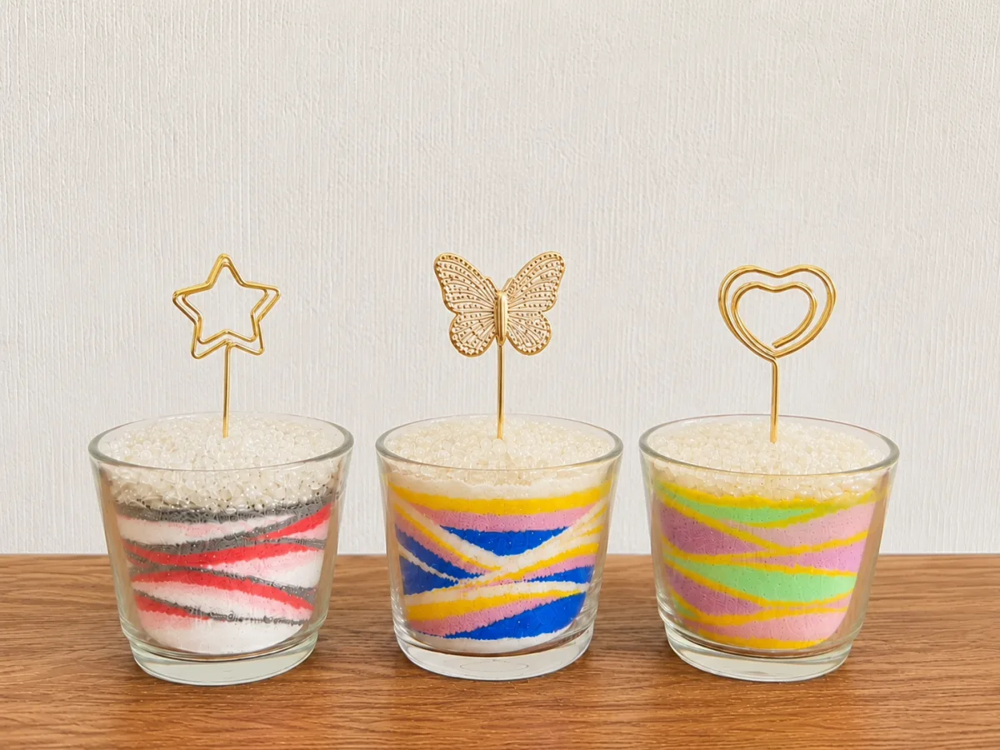
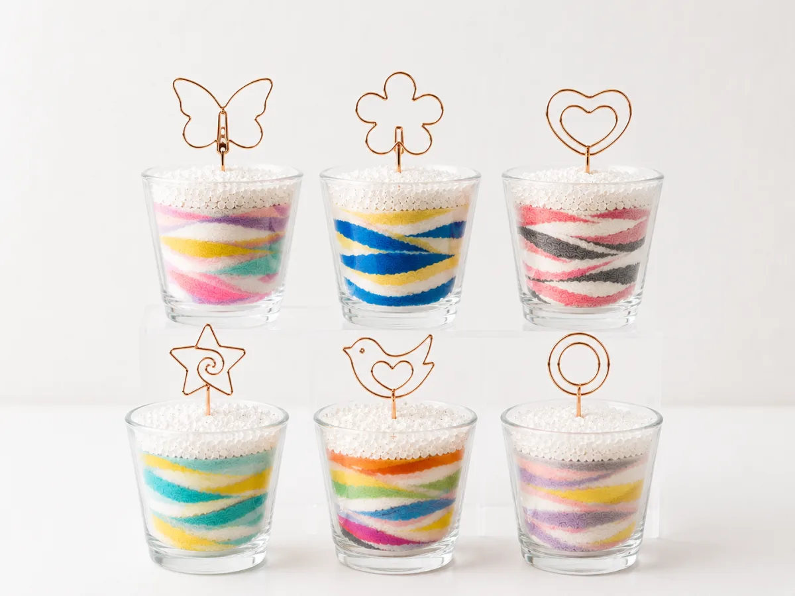
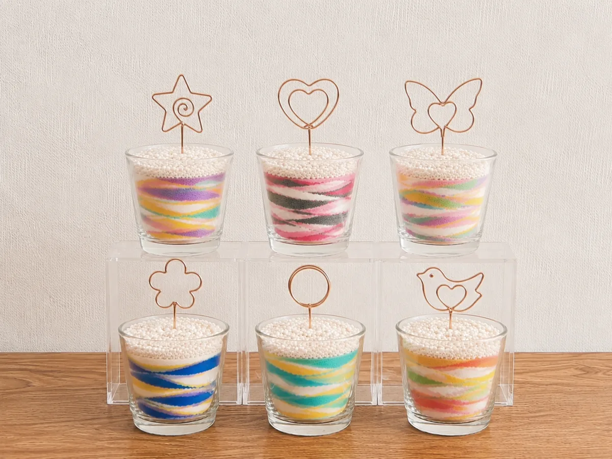

いま、オンライン体験でもイベントワークショップでも大人気なのが「クリップサンド」。グラスにカラフルな砂を重ねて、星・ハート・蝶などのゴールドクリップを挿すだけで、飾れて・使えて・写真映えする世界にひとつの作品が完成します。この記事では、クリップサンドの魅力と作り方、そして体験できる方法をご紹介します。
クリップサンドとは？
クリップサンドは、透明なグラスにカラーサンド（色砂）を一層ずつ重ねて模様を描くサンドアートに、ワイヤーでできたメモクリップを組み合わせた作品です。クリップの形は星・ハート・蝶・お花・小鳥・リングなどさまざま。ゴールドやローズゴールドの上品な色味が、カラフルな砂の層を引き立てます。
いちばんの特徴は、クリップ部分にメモ・写真・カード・結婚式の席札を挟めること。ただ飾るだけでなく、卓上のメモスタンドや写真立てとして毎日使えるので、「もらって嬉しい・作って楽しい」と幅広い世代に喜ばれています。

クリップサンドが人気の3つの理由
1. 誰でも必ず“映える”作品が完成する
色を選んでグラスに砂を入れ、傾けたり重ねたりするだけ。3歳のお子様から大人まで、絵心がなくても必ず美しいグラデーションやストライプ模様が作れます。最後にお好みのクリップを挿せば、写真映えする作品の完成です。
2. 飾るだけじゃない“実用性”
クリップにメモや写真、ポストカードを挟めば、デスクや玄関で活躍するメモスタンド・フォトスタンドに。結婚式や記念日には席札・ネームスタンドとして使えるので、ゲストへのおもてなしにもぴったりです。
3. ギフト・プチギフト・ノベルティにも
コンパクトでかわいいクリップサンドは、プチギフトやノベルティにも最適。母の日・父の日・誕生日の贈り物としてはもちろん、企業イベントの記念品や、結婚式のプチギフトとしてもご好評いただいています。詳しくは贈り物サンドアートの記事もご覧ください。
クリップの形いろいろ
クリップは贈る相手やイベントのテーマに合わせてお選びいただけます。砂の色との組み合わせは無限大です。
- 星：男の子にも人気。誕生日や七夕のイベントに
- ハート：記念日・結婚式・母の日に
- 蝶（バタフライ）：華やかで大人っぽい仕上がり
- お花：春のイベントやギフトに
- 小鳥：やさしい雰囲気でウェルカムスペースに
- リング：シンプルでどんなインテリアにもなじむ

クリップサンドを作ってみたい方へ
オンライン体験・出張ワークショップ・ギフト制作に対応しています。
「クリップサンドに興味あり」とLINEで送るだけでOK。日程や用途に合わせてご案内します。
クリップサンドの作り方（かんたん3ステップ）
- 色を選ぶ：好きなカラーサンドを数色ピックアップ
- 砂を重ねる：グラスに少しずつ入れ、傾けて模様を作る
- クリップを挿す：仕上げに好きな形のクリップを挿して完成
固める作業も特別な道具も不要。短時間で完成するので、小さなお子様や、イベントの限られた時間でも安心して楽しめます。
オンラインでも、イベントでも
クリップサンドは、ご自宅で楽しむオンライン体験でも、対面の出張ワークショップでも体験できます。
- オンライン体験：材料キットが届いて全国どこでもOK。親子やお友達、遠方のご家族と一緒に（全国オンライン体験はこちら）
- イベント・ワークショップ：商業施設・企業イベント・子ども会などの集客コンテンツに。プチギフトやノベルティ制作にも対応（企業・イベント向けはこちら）
- 結婚式・記念日：席札やウェルカムアイテムとして（結婚式サンドアートの活用法）
企業の販促ノベルティ・記念品・周年記念にも
クリップサンドは、企業の販促ノベルティや記念品としても注目されています。「ありきたりな景品では差がつかない」「来場者の記憶に残るブースにしたい」——そんな企業ご担当者様に、その場で作れて持ち帰れる体験型ノベルティとして喜ばれています。台紙やカードに会社名・ロゴ・メッセージを入れれば、イベント後もデスクで使ってもらえる“残る販促物”になります。
- 展示会・販促イベント：体験ブースで集客＆その場でノベルティ制作
- 周年記念・式典：参加者全員で作る記念品に（周年記念イベントのアイデア）
- 顧客感謝祭・ファミリーデー：親子で楽しめる体験型プチギフト（企業イベント活用例）
- 商業施設・住宅展示場の集客：滞在時間を延ばす映えコンテンツに
少人数から1日数百名規模まで、出張ワークショップ形式での制作に対応します。ロット数・名入れ台紙・ご予算・納期などはお気軽にご相談ください。サービスの詳細は企業・集客イベント向けページ、全国の出張対応は企業の出張イベントもご覧ください。
よくあるご質問
クリップサンドはオンラインでも作れますか？
はい。材料キット（グラス・カラーサンド・クリップ）を事前にお届けし、画面越しに講師がリードします。全国どこからでも、3歳のお子様から大人まで楽しめます。
イベントやワークショップでも体験できますか？
はい、出張ワークショップの人気メニューです。準備・片付けは講師が担当し、短時間で必ず作品が完成するので、集客イベントやプチギフト制作に喜ばれています。
クリップの形は選べますか？
星・ハート・蝶・お花・小鳥・リングなどからお選びいただけます。砂の色も自由に組み合わせられるので、世界にひとつの作品になります。
企業のノベルティや記念品として、まとまった数の制作はできますか？
はい、展示会・販促イベント・周年記念などのノベルティ／記念品制作に対応しています。台紙やカードへの名入れ（社名・ロゴ・メッセージ）、ロット数、ご予算、納期に合わせてご提案します。出張ワークショップ形式での当日制作も可能です。詳しくは企業様向けページからご相談ください。
クリップサンドの体験・ギフトはnicolonへ
24時間以内に返信いたします。オンライン体験・出張イベント・プチギフト制作、用途に合わせて最適なプランをご提案します。お気軽にご相談ください。

原野 玲未REMI HARANO
日本サンドアート協会 認定講師 / Webデザイナー
福岡県在住、5児の母。オンライン体験から出張イベントまで、クリップサンドをはじめとするサンドアートの魅力を全国へお届けしています。
「誰でも簡単に、美しい作品が作れる」をモットーに、参加者全員が笑顔になれるワークショップを心がけています。